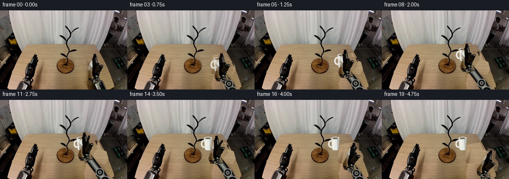
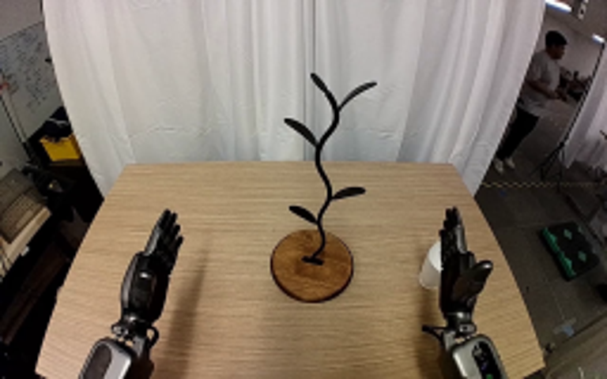
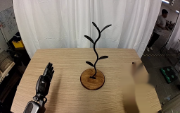
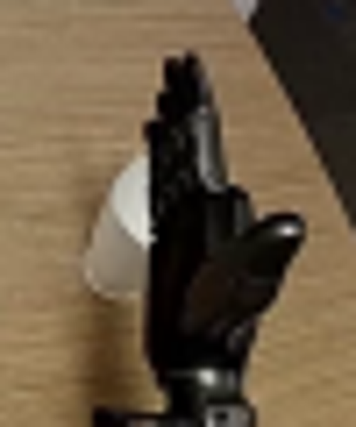
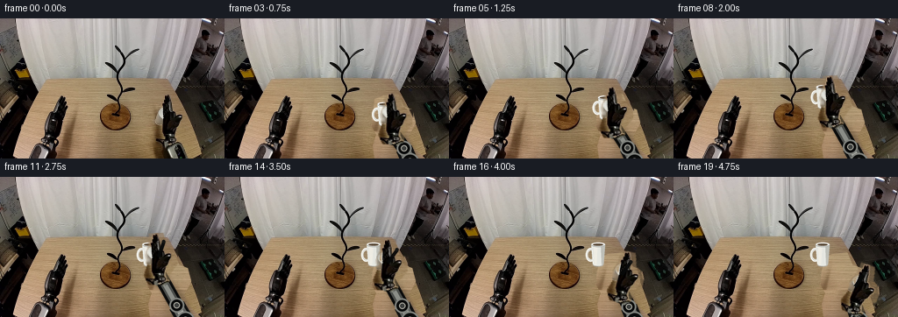
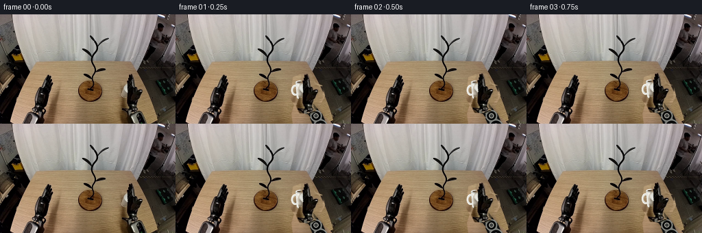
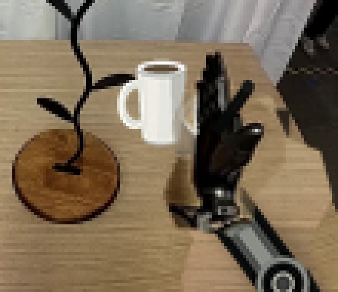
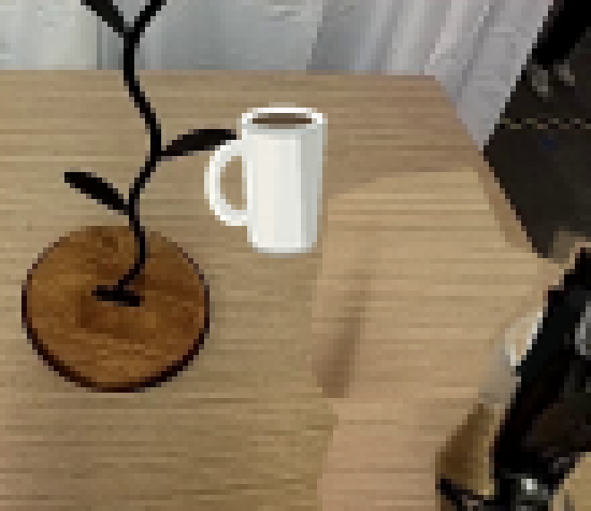

CODING AGENTS AS PIXEL WORLD MODELS
traex/GPT-5.6-Sol · common50_0032
点击播放 · 原生 RGB 像素
逐轮保存的候选
回放视频、检查图与代码变化。
每份候选均可单独播放。实际图片检查记录在下方工具轨迹中。
候选 01播放与检查图
点击播放 · 原生 RGB 像素

展开代码变化
--- 上一保存版本
+++ 本次保存版本
@@ -0,0 +1,284 @@
+#!/usr/bin/env python3
+"""Generate a deterministic 20-frame RGB manipulation video from first_frame.png.
+
+The camera and scene stay fixed. Only the right articulated arm and the mug move:
+the gripper secures the mug, lifts it, hooks its handle over the lower-right branch
+of the stand, opens/releases, and withdraws.
+"""
+from pathlib import Path
+import math
+import numpy as np
+from PIL import Image, ImageDraw, ImageFilter
+import artifact_io
+
+CASE_DIR = Path(__file__).resolve().parent
+W, H = 256, 160
+S = 4 # supersampling for smooth procedural edges
+
+
+def smoothstep(x):
+ x = max(0.0, min(1.0, float(x)))
+ return x * x * (3.0 - 2.0 * x)
+
+
+def lerp(a, b, t):
+ return a + (b - a) * smoothstep(t)
+
+
+def rgba_layer():
+ return Image.new("RGBA", (W * S, H * S), (0, 0, 0, 0))
+
+
+def scaled_points(points):
+ return [(round(x * S), round(y * S)) for x, y in points]
+
+
+def down(layer):
+ return layer.resize((W, H), Image.Resampling.LANCZOS)
+
+
+def make_clean_background(src):
+ """Replace only the original mug/right-arm footprint with matching wood grain."""
+ a = np.asarray(src).copy().astype(np.float32)
+ # The mask deliberately includes the cast shadow so a moving arm leaves no ghost.
+ mask_hi = Image.new("L", (W * S, H * S), 0)
+ d = ImageDraw.Draw(mask_hi)
+ d.polygon(scaled_points([
+ (171, 92), (181, 88), (198, 86), (204, 100), (214, 104),
+ (218, 119), (210, 135), (214, 146), (229, 160), (171, 160),
+ (169, 145), (173, 132), (168, 124)
+ ]), fill=255)
+ # A second lobe cleans the original cup and its soft contact shadow.
+ d.ellipse((168*S, 92*S, 199*S, 139*S), fill=255)
+ mask = np.asarray(mask_hi.resize((W, H), Image.Resampling.LANCZOS), dtype=np.float32) / 255.0
+
+ synth = a.copy()
+ original = np.asarray(src).astype(np.float32)
+ for y in range(68, H):
+ # Safe strips of tabletop, selected so neither stand nor left robot is sampled.
+ if y < 129:
+ lo, span = 77, 34
+ else:
+ lo, span = 91, 34
+ strip = original[y, lo:lo + span + 1]
+ med = np.median(strip, axis=0)
+ for x in range(164, 236):
+ p = (x - 168) % (2 * span)
+ tri = p if p <= span else 2 * span - p
+ donor = lo + int(tri)
+ detail = original[y, donor]
+ # Preserve horizontal grain while matching the slightly brighter right side.
+ val = 0.74 * detail + 0.26 * med + np.array([3.5, 3.0, 2.0])
+ synth[y, x] = np.clip(val, 0, 255)
+
+ # Slightly soften only the synthesized patch so repeated sensor noise does not show.
+ synth_im = Image.fromarray(np.uint8(np.clip(synth, 0, 255))).filter(
+ ImageFilter.GaussianBlur(0.28)
+ )
+ synth = np.asarray(synth_im).astype(np.float32)
+ out = a * (1.0 - mask[..., None]) + synth * mask[..., None]
+ return Image.fromarray(np.uint8(np.clip(out, 0, 255)), "RGB")
+
+
+def make_hand_sprite(src):
+ """Extract the rigid black gripper using color and a conservative silhouette."""
+ rgb = np.asarray(src).astype(np.float32)
+ gray = rgb.mean(axis=2)
+ sat = rgb.max(axis=2) - rgb.min(axis=2)
+
+ poly = Image.new("L", (W, H), 0)
+ pd = ImageDraw.Draw(poly)
+ pd.polygon([
+ (184, 87), (198, 87), (202, 102), (207, 105), (214, 106),
+ (213, 122), (204, 132), (204, 140), (198, 145), (182, 143),
+ (177, 134), (181, 123), (179, 111), (183, 100)
+ ], fill=255)
+ region = np.asarray(poly, dtype=np.float32) / 255.0
+ # Black polymer and neutral metallic highlights differ strongly from warm wood.
+ darkness = np.clip((142.0 - gray) / 48.0, 0.0, 1.0)
+ neutral_metal = np.clip((44.0 - sat) / 24.0, 0.0, 1.0) * np.clip((190.0 - gray) / 65.0, 0.0, 1.0)
+ alpha = np.maximum(darkness, neutral_metal * 0.88) * region
+ alpha = np.uint8(np.clip(alpha * 255, 0, 255))
+ alpha_im = Image.fromarray(alpha).filter(ImageFilter.MaxFilter(3)).filter(ImageFilter.GaussianBlur(0.55))
+ rgba = np.dstack([np.asarray(src), np.asarray(alpha_im)])
+ return Image.fromarray(rgba.astype(np.uint8), "RGBA")
+
+
+def transform_hand(sprite, wrist, angle_deg):
+ """Rigid affine transform about the wrist at (194,134), no sprite deformation."""
+ ox, oy = 194.0, 134.0
+ nx, ny = wrist
+ th = math.radians(angle_deg)
+ c, s = math.cos(th), math.sin(th)
+ # Inverse mapping: source = R^-1(output-new_wrist)+old_wrist.
+ coeff = (c, s, ox - c*nx - s*ny,
+ -s, c, oy + s*nx - c*ny)
+ return sprite.transform((W, H), Image.Transform.AFFINE, coeff,
+ resample=Image.Resampling.BICUBIC)
+
+
+def draw_soft_shadow(base, cup, lift, wrist, final_hanging=False):
+ layer = rgba_layer()
+ d = ImageDraw.Draw(layer)
+ cx, cy = cup
+ # Cup contact shadow stays locked to the table and fades as it rises.
+ if lift < 0.98:
+ alpha = int(58 * (1.0 - 0.72 * lift))
+ sw = 10 + 5 * lift
+ sx, sy = 184 + (cx - 183) * 0.18, 128 + (cy - 111) * 0.08
+ d.ellipse((int((sx-sw)*S), int((sy-2)*S), int((sx+sw)*S), int((sy+3)*S)),
+ fill=(60, 44, 28, alpha))
+ # Subtle arm shadow grounds the mechanism without moving the background.
+ wx, wy = wrist
+ d.line(scaled_points([(213, 163), (207, 149), (wx+2, wy+4)]),
+ fill=(48, 36, 27, 45), width=18*S, joint="curve")
+ layer = layer.filter(ImageFilter.GaussianBlur(2.0*S))
+ return Image.alpha_composite(base.convert("RGBA"), down(layer))
+
+
+def draw_arm(base, wrist):
+ """Draw two rigid metal links pinned to the fixed lower-right base."""
+ wx, wy = wrist
+ anchor = (211.5, 164.0)
+ # Elbow remains below/right of the wrist and bends smoothly as the hand reaches.
+ reach = max(0.0, min(1.0, (134.0 - wy) / 24.0))
+ elbow = (205.0 - 2.5 * reach + 0.10*(wx-194), 148.5 - 2.0 * reach)
+ layer = rgba_layer()
+ d = ImageDraw.Draw(layer)
+ A, E, R = scaled_points([anchor, elbow, wrist])
+ # Rear link, black housing and brushed aluminum insert.
+ d.line([A, E], fill=(13, 14, 14, 255), width=19*S)
+ d.line([A, E], fill=(92, 94, 91, 255), width=13*S)
+ d.line([A, E], fill=(170, 171, 164, 255), width=7*S)
+ # Front link.
+ d.line([E, R], fill=(9, 10, 10, 255), width=16*S)
+ d.line([E, R], fill=(75, 77, 74, 255), width=10*S)
+ d.line([E, R], fill=(139, 141, 135, 255), width=5*S)
+ # Rigid revolute joints.
+ for (x, y), rad in [(anchor, 10.5), (elbow, 8.5), (wrist, 7.0)]:
+ box = ((x-rad)*S, (y-rad)*S, (x+rad)*S, (y+rad)*S)
+ d.ellipse(box, fill=(10, 11, 11, 255), outline=(126, 128, 123, 255), width=2*S)
+ ir = rad * 0.42
+ d.ellipse(((x-ir)*S, (y-ir)*S, (x+ir)*S, (y+ir)*S),
+ fill=(61, 63, 61, 255), outline=(189, 190, 181, 230), width=S)
+ return Image.alpha_composite(base, down(layer))
+
+
+def draw_mug(base, center, lift, settled=False):
+ """Draw a rigid, shaded white ceramic mug with its handle facing the stand."""
+ cx, cy = center
+ layer = rgba_layer()
+ d = ImageDraw.Draw(layer)
+ # Dimensions match the partially occluded source mug.
+ top_y, bot_y = cy - 12.0, cy + 12.5
+ left_top, right_top = cx - 8.0, cx + 8.0
+ left_bot, right_bot = cx - 6.2, cx + 6.2
+
+ # Handle first, so the cup body occludes its right attachment. The transparent
+ # opening lets the black branch remain visibly threaded through it at placement.
+ hb = ((cx-14.2)*S, (cy-8.0)*S, (cx-3.0)*S, (cy+7.8)*S)
+ d.ellipse(hb, fill=(221, 221, 215, 255), outline=(247, 247, 241, 255), width=S)
+ hi = ((cx-11.3)*S, (cy-5.0)*S, (cx-4.3)*S, (cy+4.8)*S)
+ d.ellipse(hi, fill=(0, 0, 0, 0))
+
+ # Cup silhouette and gentle left-to-right ceramic shading.
+ body = [(left_top, top_y), (right_top, top_y), (right_bot, bot_y-2.0),
+ (cx+4.4, bot_y), (cx-4.4, bot_y), (left_bot, bot_y-2.0)]
+ d.polygon(scaled_points(body), fill=(229, 230, 224, 255))
+ # Vertical highlight and shaded right flank.
+ d.polygon(scaled_points([
+ (cx-5.2, top_y+1), (cx-0.8, top_y+1), (cx-1.8, bot_y-1), (cx-4.2, bot_y-1)
+ ]), fill=(250, 250, 245, 225))
+ d.polygon(scaled_points([
+ (cx+3.0, top_y+1), (right_top, top_y), (right_bot, bot_y-2),
+ (cx+3.9, bot_y-0.5)
+ ]), fill=(192, 195, 190, 235))
+ # Oval rim and dark coffee/interior make the object unmistakably a mug.
+ d.ellipse(((left_top)*S, (top_y-2.2)*S, (right_top)*S, (top_y+3.0)*S),
+ fill=(239, 240, 235, 255), outline=(175, 178, 174, 255), width=S)
+ d.ellipse(((cx-5.9)*S, (top_y-1.0)*S, (cx+5.9)*S, (top_y+1.65)*S),
+ fill=(91, 76, 60, 235))
+ d.arc(((left_top)*S, (top_y-2.2)*S, (right_top)*S, (top_y+3.0)*S),
+ 184, 356, fill=(255, 255, 252, 255), width=S)
+ # Bottom contact edge; restrained while hanging.
+ d.arc(((cx-6.0)*S, (bot_y-3.0)*S, (cx+6.0)*S, (bot_y+1.0)*S),
+ 0, 180, fill=(167, 169, 165, 180), width=S)
+ return Image.alpha_composite(base, down(layer))
+
+
+def pose(frame):
+ """Return cup center, wrist, hand angle, grasp state and normalized lift."""
+ start_c = np.array([183.0, 111.0])
+ final_c = np.array([170.0, 89.0])
+ start_w = np.array([194.0, 134.0])
+ grasp_w = np.array([182.0, 112.0])
+
+ if frame <= 2: # stable approach and closure
+ c = start_c
+ w = start_w + np.array([-0.7 * smoothstep((frame-1)/1.0), -0.8 * smoothstep((frame-1)/1.0)])
+ return c, w, 0.0, True, 0.0
+ if frame <= 9: # secure lift and inward transfer
+ t = smoothstep((frame - 2) / 7.0)
+ c = start_c + (final_c - start_c) * t
+ w = start_w + (grasp_w - start_w) * t
+ return c, w, -2.0 * t, True, t
+ if frame <= 11: # settle handle on branch before opening
+ c = final_c + np.array([0.0, 0.7 * (1.0-smoothstep((frame-9)/2.0))])
+ w = grasp_w + np.array([0.0, 0.6 * (1.0-smoothstep((frame-9)/2.0))])
+ return c, w, -2.0, True, 1.0
+ # Cup remains perfectly still while the gripper retracts down and right.
+ t = smoothstep((frame - 12) / 7.0)
+ end_w = np.array([208.0, 146.0])
+ w = grasp_w + (end_w - grasp_w) * t
+ angle = -2.0 + 22.0 * t
+ return final_c, w, angle, False, 1.0
+
+
+def add_release_cue(base, wrist, frame):
+ """Small rigid opposing jaw makes release/withdrawal legible after frame 11."""
+ if frame < 10:
+ return base
+ openness = smoothstep((frame - 10) / 3.0)
+ wx, wy = wrist
+ layer = rgba_layer()
+ d = ImageDraw.Draw(layer)
+ # A slim black opposing jaw pivots outward; it remains attached to the palm.
+ pivot = (wx-1.0, wy-21.0)
+ ang = math.radians(-12 - 24*openness)
+ tip = (pivot[0] - 18*math.sin(ang), pivot[1] - 18*math.cos(ang))
+ d.line(scaled_points([pivot, tip]), fill=(7, 8, 8, 245), width=4*S)
+ d.ellipse(((tip[0]-2)*S, (tip[1]-2)*S, (tip[0]+2)*S, (tip[1]+2)*S),
+ fill=(18, 19, 18, 250))
+ return Image.alpha_composite(base, down(layer))
+
+
+def generate():
+ src = Image.open(CASE_DIR / "first_frame.png").convert("RGB")
+ assert src.size == (W, H)
+ clean = make_clean_background(src)
+ hand = make_hand_sprite(src)
+
+ frames = [np.asarray(src).copy()] # contract: frame 00 pixel-identical
+ for f in range(1, 20):
+ cup, wrist, angle, grasped, lift = pose(f)
+ canvas = clean.convert("RGBA")
+ canvas = draw_soft_shadow(canvas, cup, lift, wrist, final_hanging=(f >= 12))
+ canvas = draw_arm(canvas, wrist)
+ # Mug is behind the gripper while grasped, exactly as in the source view.
+ canvas = draw_mug(canvas, cup, lift, settled=(f >= 12))
+ transformed = transform_hand(hand, wrist, angle)
+ canvas = Image.alpha_composite(canvas, transformed)
+ canvas = add_release_cue(canvas, wrist, f)
+ frames.append(np.asarray(canvas.convert("RGB"), dtype=np.uint8))
+
+ arr = np.stack(frames, axis=0).astype(np.uint8)
+ # Explicit invariants before serialization.
+ assert arr.shape == (20, H, W, 3)
+ assert arr.dtype == np.uint8
+ assert np.array_equal(arr[0], np.asarray(src)), "frame 00 changed"
+ artifact_io.save(arr, CASE_DIR)
+ return arr
+
+
+if __name__ == "__main__":
+ generate()
候选 02播放与检查图
点击播放 · 原生 RGB 像素

展开代码变化
--- 上一保存版本
+++ 本次保存版本
@@ -209,9 +209,11 @@
def pose(frame):
"""Return cup center, wrist, hand angle, grasp state and normalized lift."""
start_c = np.array([183.0, 111.0])
- final_c = np.array([170.0, 89.0])
+ # This location threads the stand's lower-right branch tip (about 153,91)
+ # through the mug-handle opening rather than leaving the cup floating nearby.
+ final_c = np.array([162.5, 89.0])
start_w = np.array([194.0, 134.0])
- grasp_w = np.array([182.0, 112.0])
+ grasp_w = np.array([174.5, 112.0])
if frame <= 2: # stable approach and closure
c = start_c
@@ -269,7 +271,17 @@
transformed = transform_hand(hand, wrist, angle)
canvas = Image.alpha_composite(canvas, transformed)
canvas = add_release_cue(canvas, wrist, f)
- frames.append(np.asarray(canvas.convert("RGB"), dtype=np.uint8))
+ rendered = np.asarray(canvas.convert("RGB"), dtype=np.uint8)
+ # The first source frame includes the same nearly-static pose. A short
+ # source-to-procedural dissolve suppresses a one-frame segmentation pop
+ # while preserving the exact frame-00 contract.
+ source_mix = {1: 0.72, 2: 0.38, 3: 0.12}.get(f, 0.0)
+ if source_mix:
+ rendered = np.uint8(np.clip(
+ rendered.astype(np.float32) * (1.0-source_mix) +
+ np.asarray(src).astype(np.float32) * source_mix,
+ 0, 255))
+ frames.append(rendered)
arr = np.stack(frames, axis=0).astype(np.uint8)
# Explicit invariants before serialization.
候选 03播放与检查图

候选 04播放与检查图
点击播放 · 原生 RGB 像素

展开代码变化
--- 上一保存版本
+++ 本次保存版本
@@ -77,7 +77,7 @@
)
synth = np.asarray(synth_im).astype(np.float32)
out = a * (1.0 - mask[..., None]) + synth * mask[..., None]
- return Image.fromarray(np.uint8(np.clip(out, 0, 255)), "RGB")
+ return Image.fromarray(np.uint8(np.clip(out, 0, 255)))
def make_hand_sprite(src):
@@ -101,7 +101,7 @@
alpha = np.uint8(np.clip(alpha * 255, 0, 255))
alpha_im = Image.fromarray(alpha).filter(ImageFilter.MaxFilter(3)).filter(ImageFilter.GaussianBlur(0.55))
rgba = np.dstack([np.asarray(src), np.asarray(alpha_im)])
- return Image.fromarray(rgba.astype(np.uint8), "RGBA")
+ return Image.fromarray(rgba.astype(np.uint8))
def transform_hand(sprite, wrist, angle_deg):
可观测工具轨迹
实际执行的命令与返回图片。
命令 1exit 0
/bin/bash -lc "cat prompt.txt && printf '\\n--- GENERATION_RULES.md ---\\n' && cat GENERATION_RULES.md"
命令 2exit 0
/bin/bash -lc "find . -maxdepth 2 -type f -printf '%p\\t%k KB\\n' | sort && printf '\\n--- tools ---\\n' && command -v ffmpeg && command -v python3 && command -v convert || true"
命令 3exit 0
/bin/bash -lc "cat task_spec.json && printf '\\n--- artifact_io.py ---\\n' && sed -n '1,260p' artifact_io.py"
命令 4exit 0
/bin/bash -lc "python3 - <<'PY'
from PIL import Image
im=Image.open('first_frame.png')
print(im.mode, im.size)
import numpy as np
x=np.array(im)
print(x.shape,x.dtype,x.min(),x.max(),x.mean(axis=(0,1)))
PY"命令 5exit 0
/bin/bash -lc "python3 - <<'PY'
from PIL import Image
im=Image.open('first_frame.png')
im.resize((768,480)).save('.tmp/enlarged.png')
PY"命令 6exit 0
/bin/bash -lc "python3 - <<'PY' mods=['cv2','scipy','imageio','matplotlib'] for m in mods: try: x=__import__(m); print(m,'ok',getattr(x,'__version__','')) except Exception as e: print(m,'NO',e) PY command -v ffmpeg || true command -v convert || true"
命令 7exit 0
/bin/bash -lc "cat > .tmp/test_clean.py <<'PY'
import cv2, numpy as np
from PIL import Image
im=cv2.imread('first_frame.png')
mask=np.zeros(im.shape[:2],np.uint8)
# mug and right robot + shadow
polys=[[(175,93),(193,91),(198,102),(197,127),(205,135),(211,151),(224,159),(183,159),(178,146),(176,128),(171,124),(173,100)],
[(192,87),(201,89),(205,106),(218,105),(219,122),(207,129),(204,140),(181,142),(177,133),(186,128),(181,115),(186,102)]]
for p in polys: cv2.fillPoly(mask,[np.array(p,np.int32)],255)
# Dilate
mask=cv2.dilate(mask,np.ones((3,3),np.uint8),1)
for method,name in [(cv2.INPAINT_TELEA,'telea'),(cv2.INPAINT_NS,'ns')]:
out=cv2.inpaint(im,mask,5,method)
cv2.imwrite(f'.tmp/{name}.png',out)
cv2.imwrite('.tmp/mask.png',mask)
PY
python3 .tmp/test_clean.py"命令 8exit 0
/bin/bash -lc "python3 - <<'PY'
from PIL import Image
im=Image.open('first_frame.png')
im.crop((165,80,215,140)).resize((500,600)).save('.tmp/crop.png')
PY"命令 9exit 0
/bin/bash -lc "cat > generate.py <<'PY'
#"'!/usr/bin/env python3
"""Generate a deterministic 20-frame RGB manipulation video from first_frame.png.
The camera and scene stay fixed. Only the right articulated arm and the mug move:
the gripper secures the mug, lifts it, hooks its handle over the lower-right branch
of the stand, opens/releases, and withdraws.
"""
from pathlib import Path
import math
import numpy as np
from PIL import Image, ImageDraw, ImageFilter
import artifact_io
CASE_DIR = Path(__file__).resolve().parent
W, H = 256, 160
S = 4 # supersampling for smooth procedural edges
def smoothstep(x):
x = max(0.0, min(1.0, float(x)))
return x * x * (3.0 - 2.0 * x)
def lerp(a, b, t):
return a + (b - a) * smoothstep(t)
def rgba_layer():
return Image.new("RGBA", (W * S, H * S), (0, 0, 0, 0))
def scaled_points(points):
return [(round(x * S), round(y * S)) for x, y in points]
def down(layer):
return layer.resize((W, H), Image.Resampling.LANCZOS)
def make_clean_background(src):
"""Replace only the original mug/right-arm footprint with matching wood grain."""
a = np.asarray(src).copy().astype(np.float32)
# The mask deliberately includes the cast shadow so a moving arm leaves no ghost.
mask_hi = Image.new("L", (W * S, H * S), 0)
d = ImageDraw.Draw(mask_hi)
d.polygon(scaled_points([
(171, 92), (181, 88), (198, 86), (204, 100), (214, 104),
(218, 119), (210, 135), (214, 146), (229, 160), (171, 160),
(169, 145), (173, 132), (168, 124)
]), fill=255)
# A second lobe cleans the original cup and its soft contact shadow.
d.ellipse((168*S, 92*S, 199*S, 139*S), fill=255)
mask = np.asarray(mask_hi.resize((W, H), Image.Resampling.LANCZOS), dtype=np.float32) / 255.0
synth = a.copy()
original = np.asarray(src).astype(np.float32)
for y in range(68, H):
# Safe strips of tabletop, selected so neither stand nor left robot is sampled.
if y < 129:
lo, span = 77, 34
else:
lo, span = 91, 34
strip = original[y, lo:lo + span + 1]
med = np.median(strip, axis=0)
for x in range(164, 236):
p = (x - 168) % (2 * span)
tri = p if p <= span else 2 * span - p
donor = lo + int(tri)
detail = original[y, donor]
# Preserve horizontal grain while matching the slightly brighter right side.
val = 0.74 * detail + 0.26 * med + np.array([3.5, 3.0, 2.0])
synth[y, x] = np.clip(val, 0, 255)
# Slightly soften only the synthesized patch so repeated sensor noise does not show.
synth_im = Image.fromarray(np.uint8(np.clip(synth, 0, 255))).filter(
ImageFilter.GaussianBlur(0.28)
)
synth = np.asarray(synth_im).astype(np.float32)
out = a * (1.0 - mask[..., None]) + synth * mask[..., None]
return Image.fromarray(np.uint8(np.clip(out, 0, 255)), "RGB")
def make_hand_sprite(src):
"""Extract the rigid black gripper using color and a conservative silhouette."""
rgb = np.asarray(src).astype(np.float32)
gray = rgb.mean(axis=2)
sat = rgb.max(axis=2) - rgb.min(axis=2)
poly = Image.new("L", (W, H), 0)
pd = ImageDraw.Draw(poly)
pd.polygon([
(184, 87), (198, 87), (202, 102), (207, 105), (214, 106),
(213, 122), (204, 132), (204, 140), (198, 145), (182, 143),
(177, 134), (181, 123), (179, 111), (183, 100)
], fill=255)
region = np.asarray(poly, dtype=np.float32) / 255.0
# Black polymer and neutral metallic highlights differ strongly from warm wood.
darkness = np.clip((142.0 - gray) / 48.0, 0.0, 1.0)
neutral_metal = np.clip((44.0 - sat) / 24.0, 0.0, 1.0) * np.clip((190.0 - gray) / 65.0, 0.0, 1.0)
alpha = np.maximum(darkness, neutral_metal * 0.88) * region
alpha = np.uint8(np.clip(alpha * 255, 0, 255))
alpha_im = Image.fromarray(alpha).filter(ImageFilter.MaxFilter(3)).filter(ImageFilter.GaussianBlur(0.55))
rgba = np.dstack([np.asarray(src), np.asarray(alpha_im)])
return Image.fromarray(rgba.astype(np.uint8), "RGBA")
def transform_hand(sprite, wrist, angle_deg):
"""Rigid affine transform about the wrist at (194,134), no sprite deformation."""
ox, oy = 194.0, 134.0
nx, ny = wrist
th = math.radians(angle_deg)
c, s = math.cos(th), math.sin(th)
# Inverse mapping: source = R''^-1(output-new_wrist)+old_wrist.
coeff = (c, s, ox - c*nx - s*ny,
-s, c, oy + s*nx - c*ny)
return sprite.transform((W, H), Image.Transform.AFFINE, coeff,
resample=Image.Resampling.BICUBIC)
def draw_soft_shadow(base, cup, lift, wrist, final_hanging=False):
layer = rgba_layer()
d = ImageDraw.Draw(layer)
cx, cy = cup
# Cup contact shadow stays locked to the table and fades as it rises.
if lift < 0.98:
alpha = int(58 * (1.0 - 0.72 * lift))
sw = 10 + 5 * lift
sx, sy = 184 + (cx - 183) * 0.18, 128 + (cy - 111) * 0.08
d.ellipse((int((sx-sw)*S), int((sy-2)*S), int((sx+sw)*S), int((sy+3)*S)),
fill=(60, 44, 28, alpha))
# Subtle arm shadow grounds the mechanism without moving the background.
wx, wy = wrist
d.line(scaled_points([(213, 163), (207, 149), (wx+2, wy+4)]),
fill=(48, 36, 27, 45), width=18*S, joint="curve")
layer = layer.filter(ImageFilter.GaussianBlur(2.0*S))
return Image.alpha_composite(base.convert("RGBA"), down(layer))
def draw_arm(base, wrist):
"""Draw two rigid metal links pinned to the fixed lower-right base."""
wx, wy = wrist
anchor = (211.5, 164.0)
# Elbow remains below/right of the wrist and bends smoothly as the hand reaches.
reach = max(0.0, min(1.0, (134.0 - wy) / 24.0))
elbow = (205.0 - 2.5 * reach + 0.10*(wx-194), 148.5 - 2.0 * reach)
layer = rgba_layer()
d = ImageDraw.Draw(layer)
A, E, R = scaled_points([anchor, elbow, wrist])
# Rear link, black housing and brushed aluminum insert.
d.line([A, E], fill=(13, 14, 14, 255), width=19*S)
d.line([A, E], fill=(92, 94, 91, 255), width=13*S)
d.line([A, E], fill=(170, 171, 164, 255), width=7*S)
# Front link.
d.line([E, R], fill=(9, 10, 10, 255), width=16*S)
d.line([E, R], fill=(75, 77, 74, 255), width=10*S)
d.line([E, R], fill=(139, 141, 135, 255), width=5*S)
# Rigid revolute joints.
for (x, y), rad in [(anchor, 10.5), (elbow, 8.5), (wrist, 7.0)]:
box = ((x-rad)*S, (y-rad)*S, (x+rad)*S, (y+rad)*S)
d.ellipse(box, fill=(10, 11, 11, 255), outline=(126, 128, 123, 255), width=2*S)
ir = rad * 0.42
d.ellipse(((x-ir)*S, (y-ir)*S, (x+ir)*S, (y+ir)*S),
fill=(61, 63, 61, 255), outline=(189, 190, 181, 230), width=S)
return Image.alpha_composite(base, down(layer))
def draw_mug(base, center, lift, settled=False):
"""Draw a rigid, shaded white ceramic mug with its handle facing the stand."""
cx, cy = center
layer = rgba_layer()
d = ImageDraw.Draw(layer)
# Dimensions match the partially occluded source mug.
top_y, bot_y = cy - 12.0, cy + 12.5
left_top, right_top = cx - 8.0, cx + 8.0
left_bot, right_bot = cx - 6.2, cx + 6.2
# Handle first, so the cup body occludes its right attachment. The transparent
# opening lets the black branch remain visibly threaded through it at placement.
hb = ((cx-14.2)*S, (cy-8.0)*S, (cx-3.0)*S, (cy+7.8)*S)
d.ellipse(hb, fill=(221, 221, 215, 255), outline=(247, 247, 241, 255), width=S)
hi = ((cx-11.3)*S, (cy-5.0)*S, (cx-4.3)*S, (cy+4.8)*S)
d.ellipse(hi, fill=(0, 0, 0, 0))
# Cup silhouette and gentle left-to-right ceramic shading.
body = [(left_top, top_y), (right_top, top_y), (right_bot, bot_y-2.0),
(cx+4.4, bot_y), (cx-4.4, bot_y), (left_bot, bot_y-2.0)]
d.polygon(scaled_points(body), fill=(229, 230, 224, 255))
# Vertical highlight and shaded right flank.
d.polygon(scaled_points([
(cx-5.2, top_y+1), (cx-0.8, top_y+1), (cx-1.8, bot_y-1), (cx-4.2, bot_y-1)
]), fill=(250, 250, 245, 225))
d.polygon(scaled_points([
(cx+3.0, top_y+1), (right_top, top_y), (right_bot, bot_y-2),
(cx+3.9, bot_y-0.5)
]), fill=(192, 195, 190, 235))
# Oval rim and dark coffee/interior make the object unmistakably a mug.
d.ellipse(((left_top)*S, (top_y-2.2)*S, (right_top)*S, (top_y+3.0)*S),
fill=(239, 240, 235, 255), outline=(175, 178, 174, 255), width=S)
d.ellipse(((cx-5.9)*S, (top_y-1.0)*S, (cx+5.9)*S, (top_y+1.65)*S),
fill=(91, 76, 60, 235))
d.arc(((left_top)*S, (top_y-2.2)*S, (right_top)*S, (top_y+3.0)*S),
184, 356, fill=(255, 255, 252, 255), width=S)
# Bottom contact edge; restrained while hanging.
d.arc(((cx-6.0)*S, (bot_y-3.0)*S, (cx+6.0)*S, (bot_y+1.0)*S),
0, 180, fill=(167, 169, 165, 180), width=S)
return Image.alpha_composite(base, down(layer))
def pose(frame):
"""Return cup center, wrist, hand angle, grasp state and normalized lift."""
start_c = np.array([183.0, 111.0])
final_c = np.array([170.0, 89.0])
start_w = np.array([194.0, 134.0])
grasp_w = np.array([182.0, 112.0])
if frame <= 2: # stable approach and closure
c = start_c
w = start_w + np.array([-0.7 * smoothstep((frame-1)/1.0), -0.8 * smoothstep((frame-1)/1.0)])
return c, w, 0.0, True, 0.0
if frame <= 9: # secure lift and inward transfer
t = smoothstep((frame - 2) / 7.0)
c = start_c + (final_c - start_c) * t
w = start_w + (grasp_w - start_w) * t
return c, w, -2.0 * t, True, t
if frame <= 11: # settle handle on branch before opening
c = final_c + np.array([0.0, 0.7 * (1.0-smoothstep((frame-9)/2.0))])
w = grasp_w + np.array([0.0, 0.6 * (1.0-smoothstep((frame-9)/2.0))])
return c, w, -2.0, True, 1.0
# Cup remains perfectly still while the gripper retracts down and right.
t = smoothstep((frame - 12) / 7.0)
end_w = np.array([208.0, 146.0])
w = grasp_w + (end_w - grasp_w) * t
angle = -2.0 + 22.0 * t
return final_c, w, angle, False, 1.0
def add_release_cue(base, wrist, frame):
"""Small rigid opposing jaw makes release/withdrawal legible after frame 11."""
if frame < 10:
return base
openness = smoothstep((frame - 10) / 3.0)
wx, wy = wrist
layer = rgba_layer()
d = ImageDraw.Draw(layer)
# A slim black opposing jaw pivots outward; it remains attached to the palm.
pivot = (wx-1.0, wy-21.0)
ang = math.radians(-12 - 24*openness)
tip = (pivot[0] - 18*math.sin(ang), pivot[1] - 18*math.cos(ang))
d.line(scaled_points([pivot, tip]), fill=(7, 8, 8, 245), width=4*S)
d.ellipse(((tip[0]-2)*S, (tip[1]-2)*S, (tip[0]+2)*S, (tip[1]+2)*S),
fill=(18, 19, 18, 250))
return Image.alpha_composite(base, down(layer))
def generate():
src = Image.open(CASE_DIR / "first_frame.png").convert("RGB")
assert src.size == (W, H)
clean = make_clean_background(src)
hand = make_hand_sprite(src)
frames = [np.asarray(src).copy()] # contract: frame 00 pixel-identical
for f in range(1, 20):
cup, wrist, angle, grasped, lift = pose(f)
canvas = clean.convert("RGBA")
canvas = draw_soft_shadow(canvas, cup, lift, wrist, final_hanging=(f >= 12))
canvas = draw_arm(canvas, wrist)
# Mug is behind the gripper while grasped, exactly as in the source view.
canvas = draw_mug(canvas, cup, lift, settled=(f >= 12))
transformed = transform_hand(hand, wrist, angle)
canvas = Image.alpha_composite(canvas, transformed)
canvas = add_release_cue(canvas, wrist, f)
frames.append(np.asarray(canvas.convert("RGB"), dtype=np.uint8))
arr = np.stack(frames, axis=0).astype(np.uint8)
# Explicit invariants before serialization.
assert arr.shape == (20, H, W, 3)
assert arr.dtype == np.uint8
assert np.array_equal(arr[0], np.asarray(src)), "frame 00 changed"
artifact_io.save(arr, CASE_DIR)
return arr
if __name__ == "__main__":
generate()
PY
python3 generate.py
python3 - <<'"'PY'
import numpy as np
from PIL import Image
p=np.load('pixels.npz')['pixels']
first=np.array(Image.open('first_frame.png'))
packed=(first[:,:,0].astype(np.uint32)<<16)|(first[:,:,1].astype(np.uint32)<<8)|first[:,:,2].astype(np.uint32)
print('pixels',p.shape,p.dtype,'frame0_exact',np.array_equal(p[:,:,0],packed))
print('artifacts generated')
PY
find . -maxdepth 2 -type f -printf '%p\\t%k KB\\n' | sort"命令 10exit 0
/bin/bash -lc "python3 generate.py && python3 - <<'PY'
from pathlib import Path
import numpy as np
from PIL import Image
files=sorted(Path('frames').glob('*.png'))
a=np.stack([np.array(Image.open(p)) for p in files])
ref=np.array(Image.open('first_frame.png'))
print('frames',len(files),'shape',a.shape,'dtype',a.dtype)
print('frame00 pixel-identical:',np.array_equal(a[0],ref))
print('mean changed pixels consecutive:',[int(np.any(a[i]"'!=a[i-1],axis=2).sum()) for i in range(1,20)])
print('"'required:', all(Path(p).exists() for p in ['generate.py','pixels.npz','index.html','inspection.png','transition_check.png']))
PY"命令 11exit 0
/bin/bash -lc "python3 - <<'PY'
from PIL import Image
for n in ('00','08','11','12','14','19'):
im=Image.open('frames/'+n+'.png')
im.crop((110,55,220,150)).resize((660,570),Image.Resampling.NEAREST).save('.tmp/f'+n+'.png')
PY"命令 12exit 0
/bin/bash -lc 'git status --short 2>/dev/null || true; du -h pixels.npz index.html inspection.png'
命令 13exit 0
/bin/bash -lc "set -e
python3 generate.py
sha256sum pixels.npz index.html frames/00.png first_frame.png generate.py
python3 - <<'PY'
import json, numpy as np
from pathlib import Path
from PIL import Image
spec=json.loads(Path('task_spec.json').read_text())
files=sorted(Path('frames').glob('*.png'))
a=np.stack([np.asarray(Image.open(p).convert('RGB')) for p in files])
assert a.shape==(spec['frames'],spec['height'],spec['width'],3)==(20,160,256,3)
assert a.dtype==np.uint8
assert np.array_equal(a[0],np.asarray(Image.open('first_frame.png').convert('RGB')))
z=np.load('pixels.npz')['pixels']
assert z.shape==(160,256,20) and z.dtype==np.uint32
assert Path('index.html').stat().st_size>0 and Path('inspection.png').stat().st_size>0
print('VALID: 20 RGB frames, 256x160, 4 fps, exact frame 00, serialized artifacts present')
PY"视觉工具实际返回图片 1

视觉工具实际返回图片 2

视觉工具实际返回图片 3
视觉工具实际返回图片 4

视觉工具实际返回图片 5

视觉工具实际返回图片 6

视觉工具实际返回图片 7

视觉工具实际返回图片 8

视觉工具实际返回图片 9

视觉工具实际返回图片 10

保存候选 4 份；完成命令 13 次；可验证图片返回 10 张。原始 API 响应与完整日志保留在本地。